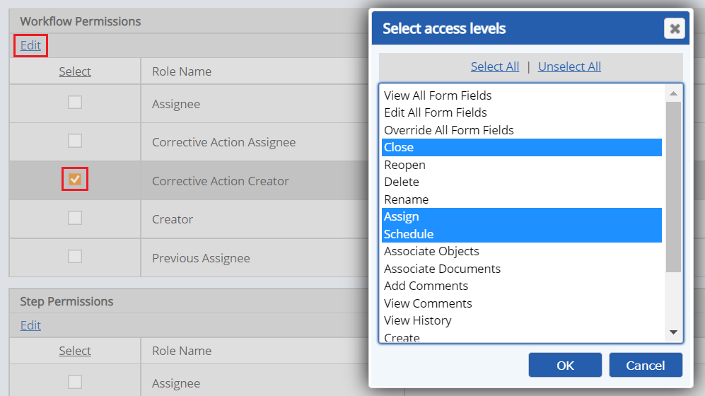

Workflow Permissions define the actions that the users associated with a Role can perform on the workflow as a whole.
To grant workflow level permissions:
In the Permissions tab of the workflow type, review the Workflow Permissions section.
All the roles defined for the workflow are listed with the permissions already granted, if any.
Check the box for the role whose permissions you want to edit, then click Edit.
A popup window shows the available workflow level permissions.
Select the permissions you want to grant.
Use Ctrl+click to select more than one, or Shift+click to select a range, or click Select All to select all permissions.
For permission definitions, see the Workflow Permissions table following.
Click OK.

The following table shows the workflow level permissions that may be granted and the related functions.
|
Workflow Level Permissions |
Permitted Functions for Role Members |
|---|---|
|
View All Fields |
May view all local and global form fields on all Steps. This is the same as granting View All Local Fields and View all Global Fields on every step in Step Permissions. |
|
Edit All Fields |
May edit all local and global form fields on any Step, if the Step is the current Step. This is the same as granting Edit All Local Fields and Edit All Global Fields on every step in Step Permissions. |
|
Override All Fields |
May edit all local and global form fields on any Step, whether or not the Step is the current Step. This is the same as granting Override All Local Fields and Override All Global Fields for every step in Step Permissions. |
|
Close |
May close a workflow |
|
Reopen |
May reopen a workflow that is closed |
|
Delete |
May delete a workflow |
|
Rename |
May change the name of the workflow |
|
Assign |
May change an assignee to the Workflow by selecting from system users and groups. (This allows user to assign a step to someone who is not a member of the default role.) See clarification below (Assign permission). |
|
Schedule |
May change the due date and edit calendar options after the workflow has been created. |
|
Associate Objects |
May associate system model objects to the workflow and change object associations (user must also have permission for objects) |
|
Associate Documents |
May associate documents and change document associations (user must also have permission for documents) |
|
Add Comments |
May add comments to the workflow |
|
View Comments |
May view comments on the workflow |
|
View History |
May view the history of the workflow |
|
Create |
May create workflow instances from type |
|
Report |
May run reports for workflow type instances |
|
Set Workflow ID |
May edit the Workflow ID. Workflow IDs are automatically generated according to the ID generating scheme, which may be customized. This permission allows a user to change the generated ID. IDs must be unique. |
| Complete Underlying Task | May edit the enabled task completion fields for an underlying/triggering task. |
| View Underlying Task | May view the enabled task completion fields for an underlying/triggering task. |
An assignee to a step can only assign the next workflow step to one of the default role members for the next step, unless they have Assign permission. If they have Assign permission, they will have the option to select a different or group from the system.